GLICD
Ajouter (installer) manuellement une imprimante :
Debian et
Xfce
Comme indiqué dans le chapitre Imprimante
seule l'interface graphique « system-config-printer » sera détaillée.
Le site ici
Pour fonctionner certaines imprimantes multifonctions ont besoin de paquets supplémentaires.
ici
- Connecter l'imprimante au PC via un câble USB et allumer l'imprimante.
- Ouvrir l'interface graphique : Simple clic > Applications > Paramètres > Configuration de l'impression
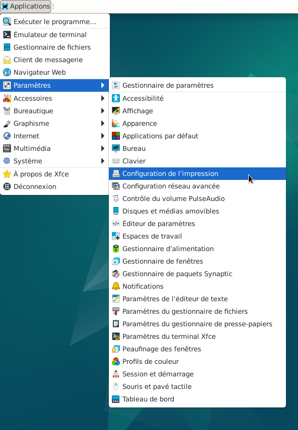
- L'application de l'interface graphique s'ouvre.
- Avant toute modification, il faut déverrouiller la boite de dialogue.
Simple clic > Déverrouiller
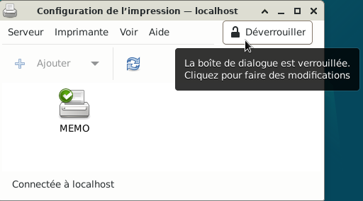
- Une fenêtre apparaît, demandant le mot de passe pour Root (superutilisateur)
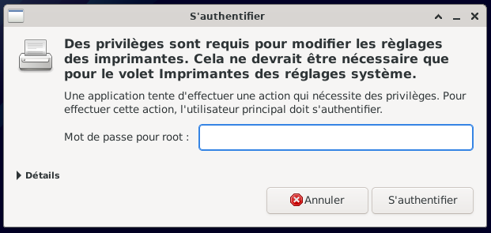
- Saisir le mot de passe pour Root (superutilisateur) et valider avec la touche Entrée du clavier
Ou simple clic > S'authentifier
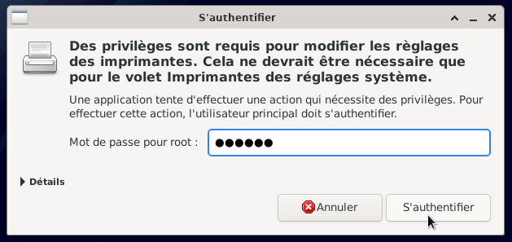
- Les modifications sont maintenant possibles puisque la boite de dialogue est déverrouillée.
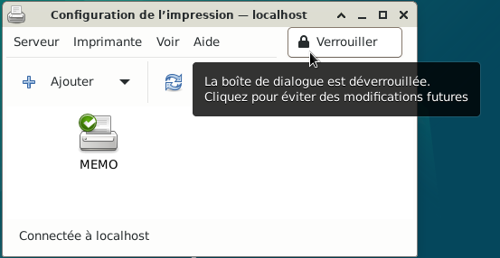
- Simple clic > Serveur > nouveau > imprimante
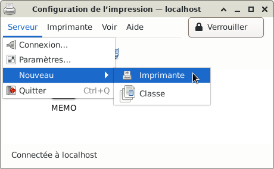
- Une fenêtre apparaît
Selectionner l'imprimante, dans cet exemple l'imprimante est une « MEMO D2812 »
Fabricant : MEMO
Modèle : D2812
Connexion : port USB
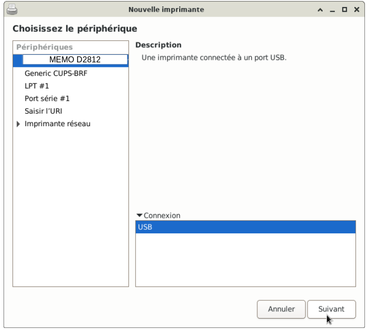
- Simple clic > Suivant
Une fenêtre apparaît, le système recherche des pilotes.
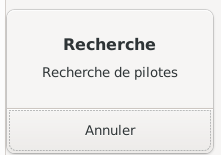
- Après un certains temps, une autre fenêtre apparaît
Dans cet exemple : l'imprimante choisie est une « MEMO D2812 »
La procédure est la même pour une imprimante d'un autre fabricant.
Dans un premier temps sélectionner le fabricant ici : MEMO
Pour trouver le fabricant : Faire défiler la liste, soit avec la molette de la souris,
soit en plaçant le pointeur de la souris comme sur l'image ci-dessous > simple clic et faire glisser la souris.
Simple clic sur le nom du fabricant > Suivant
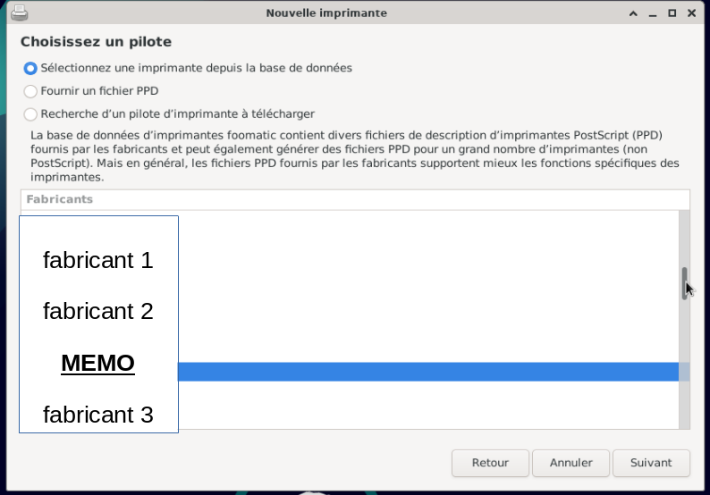
- Choisir le modèle de l'imprimante :
Pour l'imprimante « MEMO D2812 », le modèle est : D2812
Ne pas chercher « D2812 » : Dans cet exemple, il faut choisir la série « D2800 »
Le modèle exact peut être présent, s'il n'est pas présent, il faut s'en rapprocher.
Simple clic > Suivant
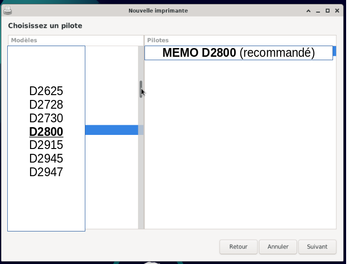
- Une fenêtre apparaît avec la nouvelle description de l'imprimante
Changer la description si besoin
Simple clic > Appliquer
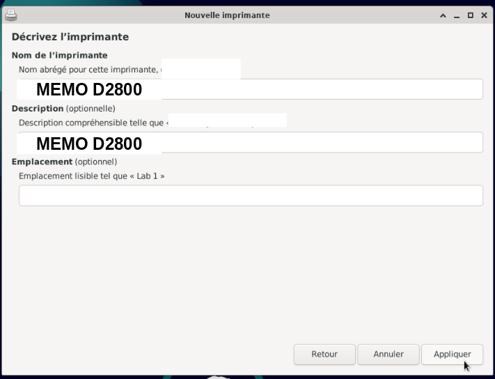
- Une fenêtre peut apparaître, demandant le mot de passe pour Root (superutilisateur)
Si non, passer l'étape
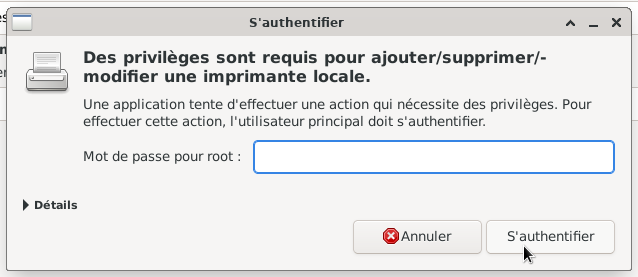
- Saisir le mot de passe pour Root (superutilisateur) et valider avec la touche Entrée du clavier
Ou simple clic > S'authentifier
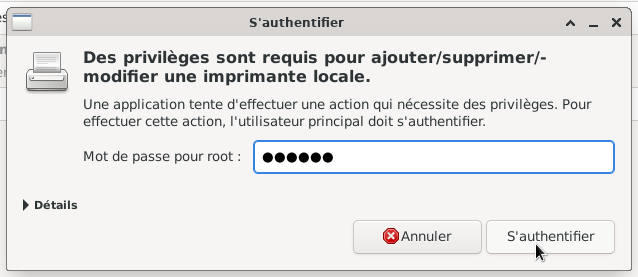
- Une fenêtre apparaît : Voulez-vous imprimer une page d'essai?
Faire un choix, ici : Annuler
Nota : l'imprimante doit être allumée pour imprimer une page de test.
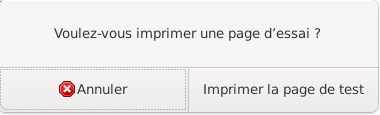
- L'imprimante « MEMO D2812 » est sous le nom « MEMO D2800 »
De plus l'imprimante est définie par défaut (rond vert avec le V blanc)
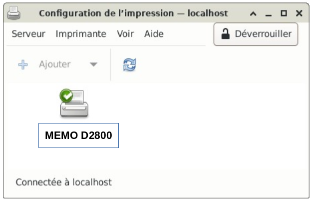
- Quitter l'application graphique : Serveur > Quitter
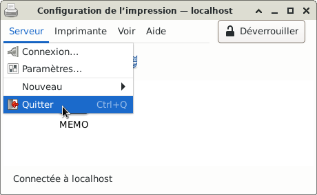

Retour
Informations sur le logiciel libre et
Merci.
Marques déposées :
Ce site ne fait pas partie de Debian, n'est pas produit par le projet
Debian, ni approuvé par le projet Debian.
Ce site n'est pas affilié à Debian. Debian est une marque déposée appartenant
à Software in the Public Interest, Inc.
Contribuer :
Ce site ne fait pas partie de XFCE, n'est pas produit par le projet
XFCE, ni approuvé par le projet XFCE.
Ce site n'est pas affilié à XFCE.
Ce site est juste réalisé par un passionné.